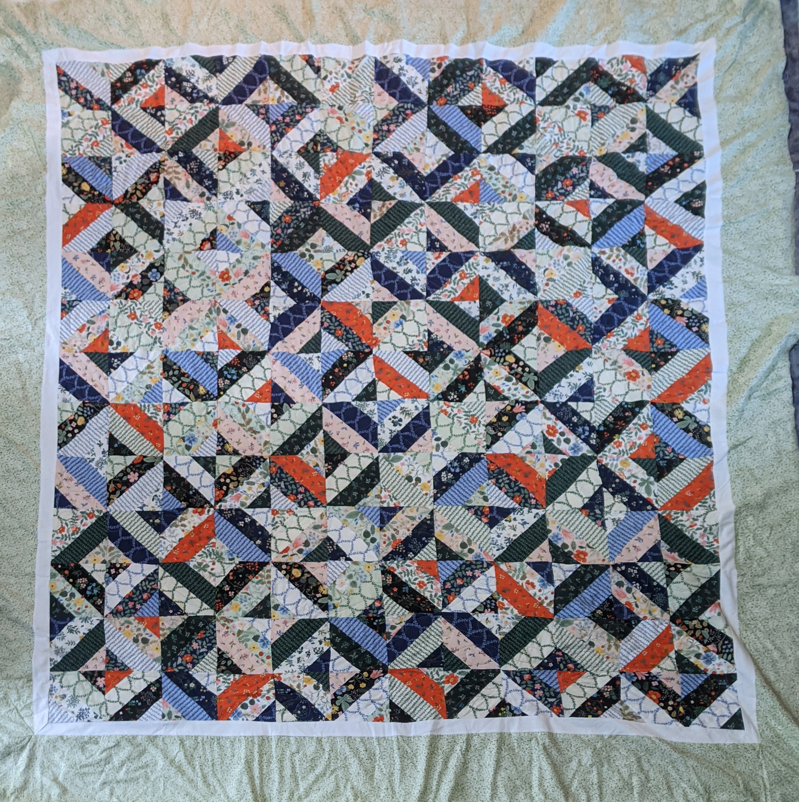
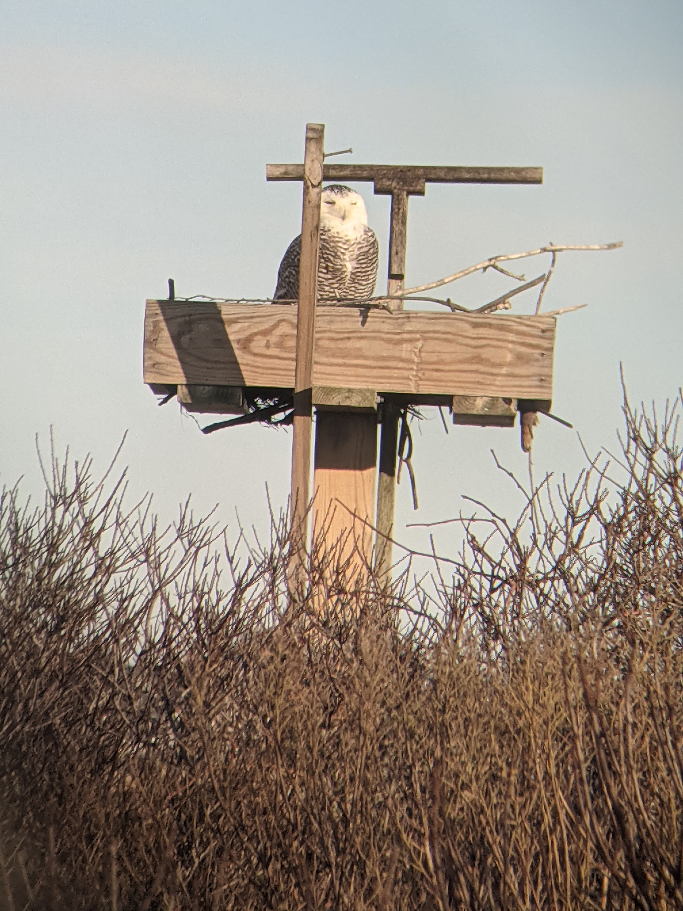

Above is a photo of a quilt I recently made. I learned to sew at a young age. Recently because of the pandemic though I decided to expand that knowledge. This quilt is the result. It is made up of two jelly rolls and a combination of a pattern and my own design.
Bellow are photos that I have personally taken. Photography has been a hobby of mine for several years. All these photos have been taken over the past year.
